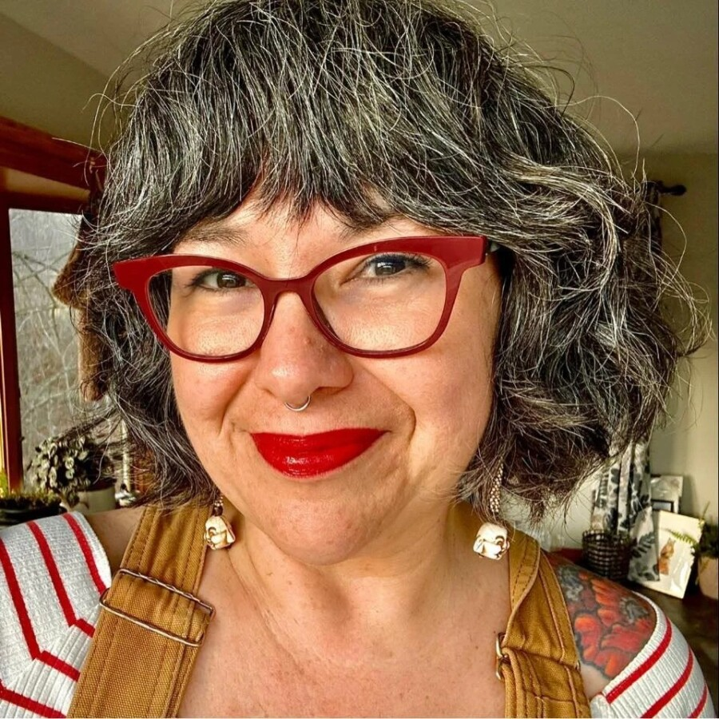

Stephanie Morningstar on Plant Wisom
Morningstar’s lecture moves between Indigenous food and plant knowledge, stories of resistance, and the strange genius of the more‑than‑human world to ask what it means to stop waiting for a singular savior and start acting like we are responsible for one another.